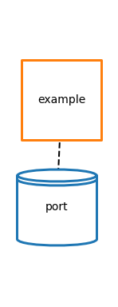
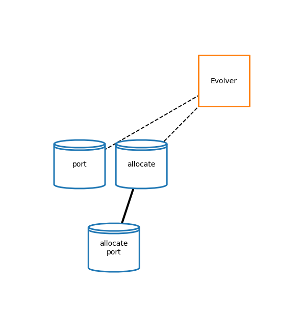
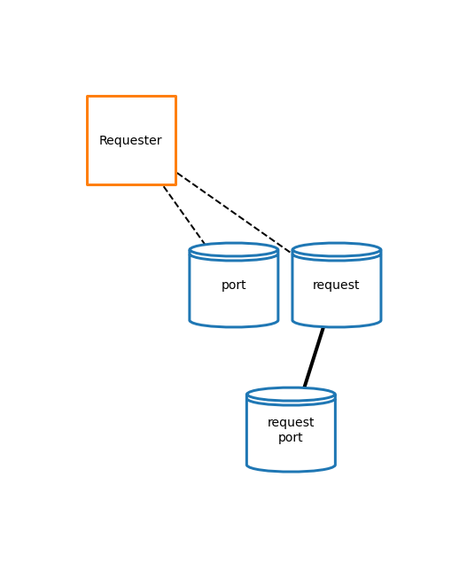
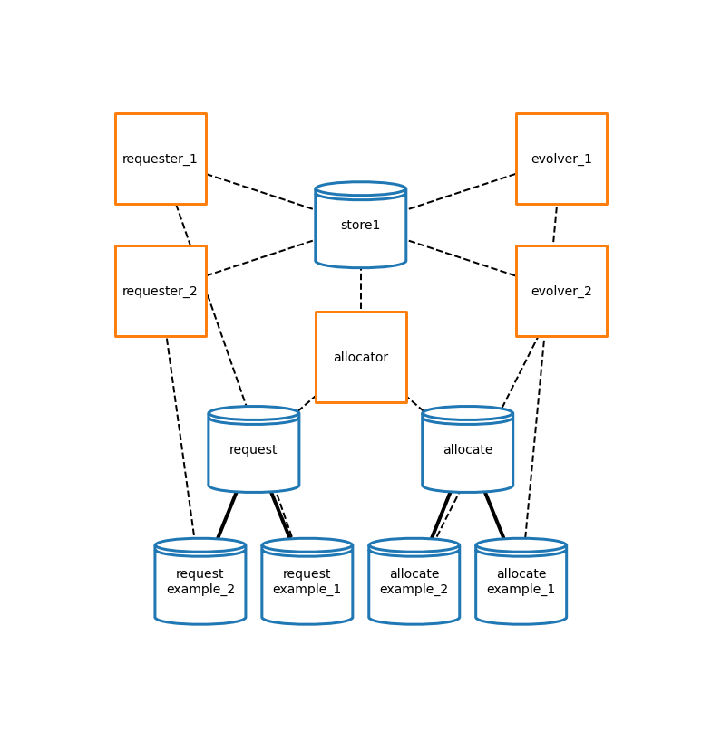

Allocation using PartitionedProcess
PartitionedProcess is the new base class for wcEcoli processes. Requester and Evolver run one after the other, with requester calling a partitioned process’ calculate_request and the evolving calling the evolve_state. Allocator is a process that reads the requests placed for all the processes, and allocates them for the next update.
PartitionedProcess, Requester, and Evolver can all be found in ecoli.processes.partition. Allocator can be found in ecoli.processes.allocator.
[1]:
# Make sure notebook runs out of vivarium-ecoli directory
import sys, os
# get the path to the notebook, and change working directory
notebook_path = sys.path[0][:sys.path[0].index('notebooks')]
sys.path.append(notebook_path)
os.chdir(sys.path[-1])
cwd = os.getcwd()
# print(cwd)
[2]:
import numpy as np
from vivarium.core.process import Process
from vivarium.core.store import Store
from vivarium.core.engine import Engine, pp
from vivarium.core.composer import Composite
from vivarium.core.composition import simulate_process, simulate_composite
from vivarium.plots.topology import plot_topology
from ecoli.processes.allocator import Allocator
from ecoli.processes.partition import PartitionedProcess, Evolver, Requester
process_row = 1.2
topology_settings = {
'buffer': 1,
'show_ports': False,
'node_size': 10000,
'dashed_edges': True,
'node_distance': 4,
'graph_format': 'hierarchy',
'coordinates': {
'example': (1,process_row),
'Requester': (0,process_row),
'Evolver': (3,process_row),
}
}
Make a Partitioned Process
[3]:
MOLECULE_IDS = ['molecule_A']
class ExampleProcess(PartitionedProcess):
name = 'example'
topology = {'port': ('store',)}
def ports_schema(self):
return {
'port': {
mol_id: {
'_default': 100.,
'_properties': {'bulk': True}
}
for mol_id in MOLECULE_IDS}}
def calculate_request(self, timestep, states):
# request molecules
return {
'port': {
mol_id: 10
for mol_id in MOLECULE_IDS}}
def evolve_state(self, timestep, states):
allocated = states['port']
# use all allocated molecules
return {
'port': allocated}
[4]:
example_1 = ExampleProcess()
process_topo_fig = plot_topology(example_1, topology_settings)

Make an Evolver for the Example PartitionedProcess
[5]:
evolver_1 = Evolver({'process': example_1})
evolver_topo_fig = plot_topology(evolver_1, topology_settings)

Make an Requester for the Example PartitionedProcess
[6]:
requester_1 = Requester({'process': example_1})
requester_topo_fig = plot_topology(requester_1, topology_settings)

Make a second partitioned process and an Allocator
This processes will be wired with the first through an Allocator. The allocator will read
[7]:
example_2 = ExampleProcess()
evolver_2 = Evolver({'process': example_2})
requester_2 = Requester({'process': example_2})
allocator_config = {
'process_names': ['example_1', 'example_2'],
'molecule_names': np.array(MOLECULE_IDS),
'seed': 0,
'custom_priorities': {
'example_1': 1,
'example_2': 2,
}
}
allocator = Allocator(allocator_config)
Wire the requesters, evolvers, and allocator together in a Composite
[8]:
evolver_1.ports_schema()
[8]:
{'port': {'molecule_A': {'_default': 100.0, '_properties': {'bulk': True}}},
'allocate': {'port': {'molecule_A': {'_default': 100.0,
'_properties': {'bulk': True},
'_updater': 'set',
'_emit': False}}}}
[9]:
allocation_composite = Composite({
'processes': {
'evolver_1': evolver_1,
'evolver_2': evolver_2,
'requester_1': requester_1,
'requester_2': requester_2,
'allocator': allocator,
},
'topology': {
'evolver_1': {
'port': ('store1',),
'allocate': {
'_path': ('allocate','example_1'),
'port': ('store1',)
},
},
'evolver_2': {
'port': ('store1',),
'allocate': {
'_path': ('allocate','example_2'),
'port': ('store1',)
},
},
'requester_1': {
'port': ('store1',),
'request': {
'_path': ('request','example_1'),
'port': ('store1',)
},
},
'requester_2': {
'port': ('store1',),
'request': {
'_path': ('request','example_2'),
'port': ('store1',)
},
},
'allocator': {
'bulk': ('store1',),
'allocate': ('allocate',),
'request': ('request',)
},
}
})
[10]:
process_row = 1.2
store_row = 0
request_column = 0.7
allocate_column = 2.3
offset = 0.4
topology_settings = {
'buffer': 1,
'show_ports': False,
'node_size': 10000,
'dashed_edges': True,
'node_distance': 4,
'graph_format': 'hierarchy',
'coordinates': {
# Processes
'requester_1': (0,process_row+1),
'requester_2': (0,process_row),
'evolver_1': (3,process_row+1),
'evolver_2': (3,process_row),
'allocator': (1.5,process_row-0.5),
# Stores
'store1': (1.5,process_row+0.5),
'allocate': (allocate_column,store_row),
'request': (request_column,store_row),
'allocate\nexample_1': (allocate_column+offset,store_row-1),
'allocate\nexample_2': (allocate_column-offset,store_row-1),
'request\nexample_1': (request_column+offset,store_row-1),
'request\nexample_2': (request_column-offset,store_row-1),
},
'remove_nodes': [
'allocate\nexample_1\nstore1',
'allocate\nexample_2\nstore1',
'request\nexample_1\nstore1',
'request\nexample_2\nstore1',
],
}
allocation_composite_topo_fig = plot_topology(allocation_composite, topology_settings)

[ ]: